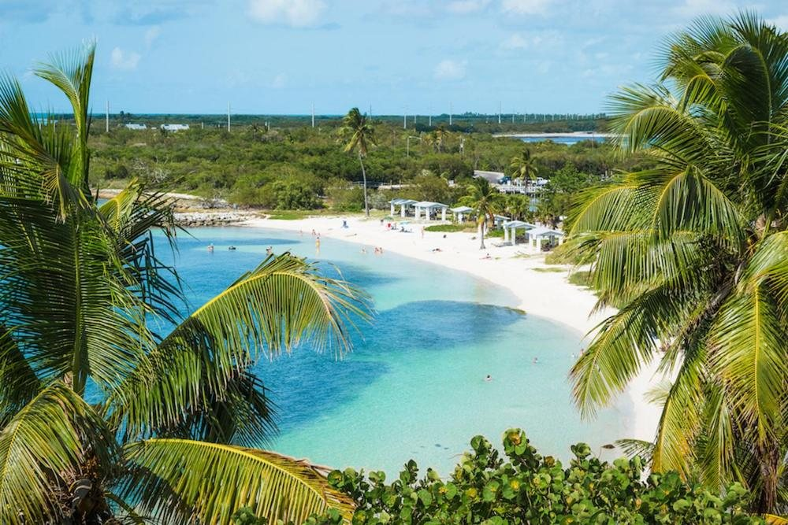

8 min · 6 mi south

State Park · Beach
Bahia Honda State Park
The clearest water in the Keys, framed by palms and the rusted skeleton of the old railroad bridge. Two and a half miles of beach across three sections (Sandspur, Calusa, Loggerhead), a snorkel reef just offshore, a marina that rents kayaks and standup paddleboards, and a campground if you ever want to extend the stay. Pack a cooler in the morning and stay through sunset — the bridge view is worth it.